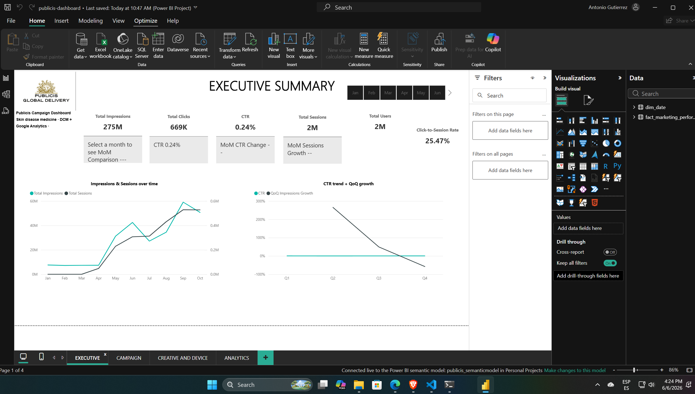
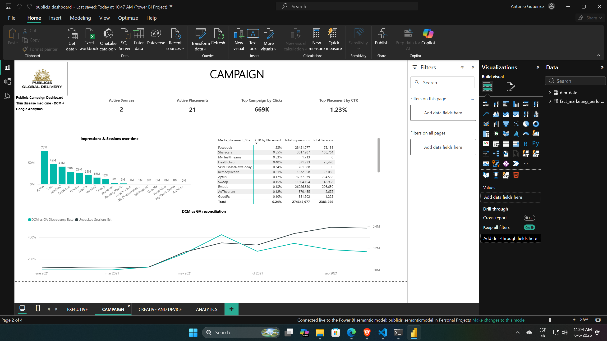
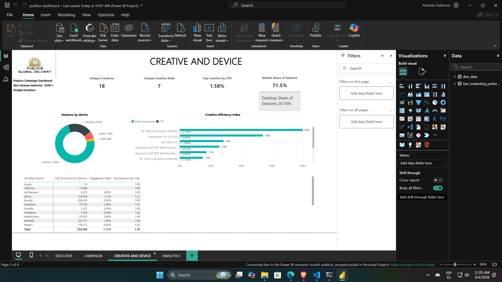

Enfoque Analítico
Análisis por capas: Emplazamiento → Creativo → Dispositivo → Tiempo, para identificar dónde el gasto es efectivo y dónde no lo es.
Análisis integral de campañas publicitarias y métricas de rendimiento para optimizar el retorno de inversión (ROI) en medios digitales.
Reconciliación cruzada entre DCM (impresiones/clicks pagados) y GA (sesiones/usuarios en sitio), unificados por sitio de publicación y mes.
Análisis por capas: Emplazamiento → Creativo → Dispositivo → Tiempo, para identificar dónde el gasto es efectivo y dónde no lo es.
Modelado en Power BI integrando DCM y Google Analytics para medir la brecha de atribución (54% click-to-session rate).
Identificación de un potencial de mejora del 40% en clicks mediante la reasignación del 15% del presupuesto de canales ineficientes.
Acciones concretas basadas en el análisis de eficiencia y comportamiento del usuario.
Reasignar 15-20% del presupuesto de Aptus/Zeta hacia Facebook (CTR 1.23%) y Sharecare (CTR 0.55%).
Mobile genera el 71% de las sesiones. Priorizar el formato 320x50 y optimizar landing pages para carga móvil.
Eliminar creativos "Transparent 1x1" y "(not set)" que distorsionan los cálculos de CTR y presupuesto.


